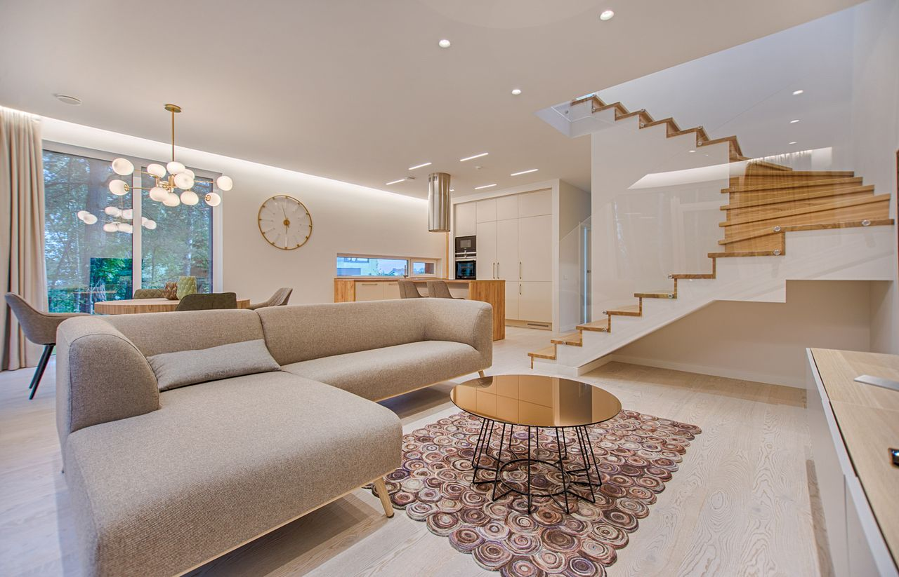

ADDITION / PORTLAND, OR
Alder House
A bright family room and a wider connection to the backyard.
SELECTED WORK / FICTIONAL PROJECTS
Four ideas for rethinking a home, from the front door to the family room. The photographs are visual references for these fictional projects, not photos of completed client work.

A bright family room and a wider connection to the backyard.

Warm materials and a more useful path between prep and table.

A quieter palette, practical storage, and a walk-in shower.

A considered exterior update with a welcoming front porch.